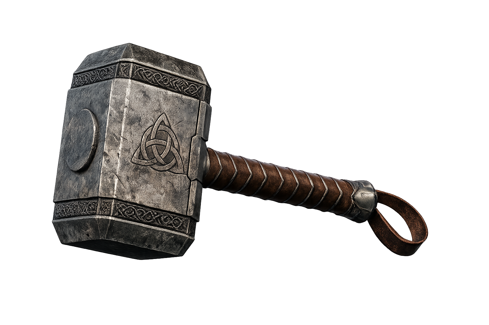
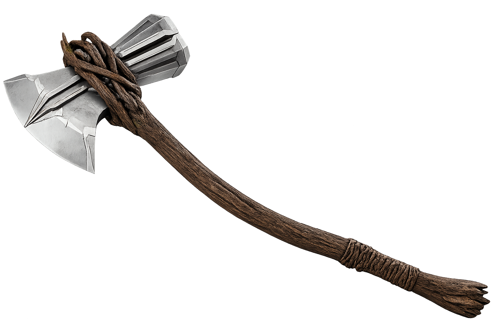

0%
Protetor dos nove reinos. Sinta o poder da tempestade e a fúria do trovão guiando seu destino na batalha eterna.

A Arma da Dignidade

A Fúria de um Rei
Controle absoluto sobre as tempestades. O poder de invocar raios colossais, criar furacões devastadores e trazer os céus abaixo sobre seus inimigos com a fúria de Asgard.
Através do giro magistral de Mjölnir ou com o chamado incansável de Stormbreaker, Thor corta os ares como um relâmpago divino, alcançando velocidades supersônicas no vácuo espacial ou dentro da atmosfera de qualquer reino.
Um dos seres mais fortes do universo, capaz de suportar o peso de estrelas e enfrentar titãs mano a mano.
Invulnerabilidade à maioria das doenças, suportando o vácuo espacial e o fogo de estrelas agonizantes.
Sinta a energia que percorre as veias de Asgard. O trovão não é apenas um fenômeno, mas uma força viva que se molda à vontade de um Rei preparado para a guerra.